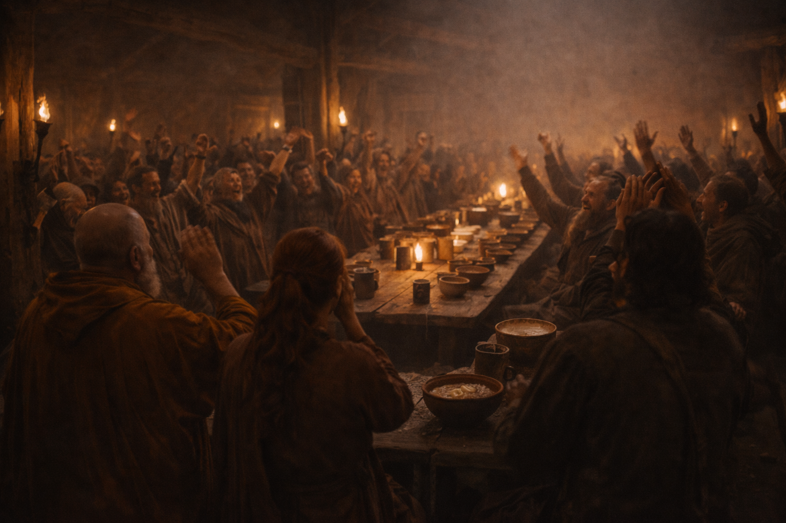
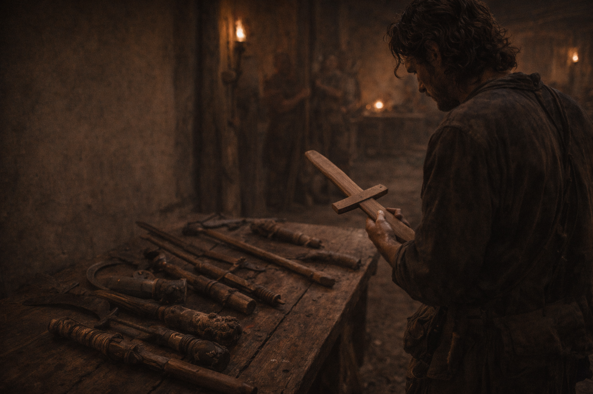
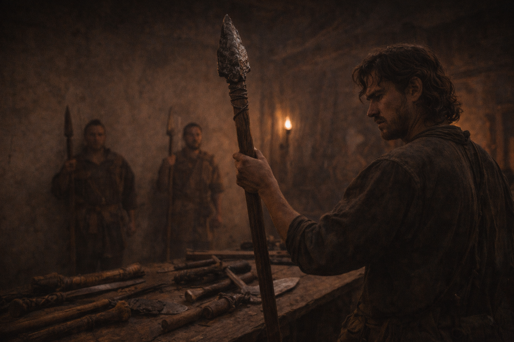
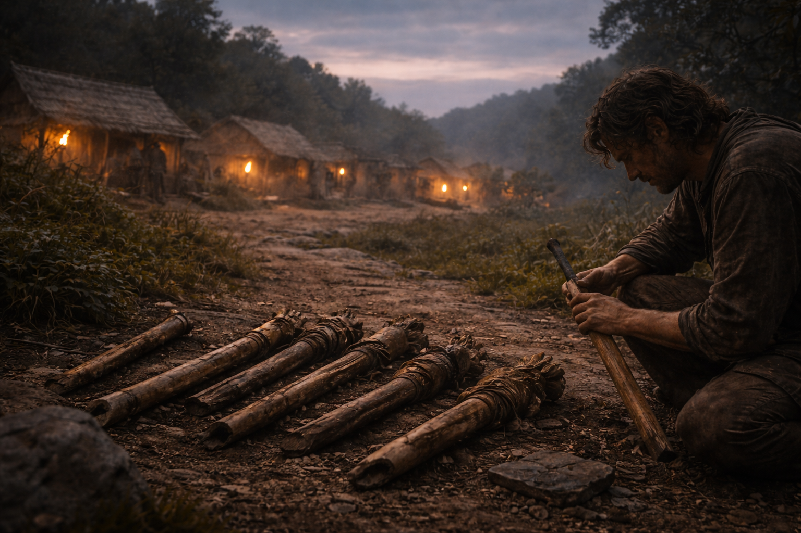
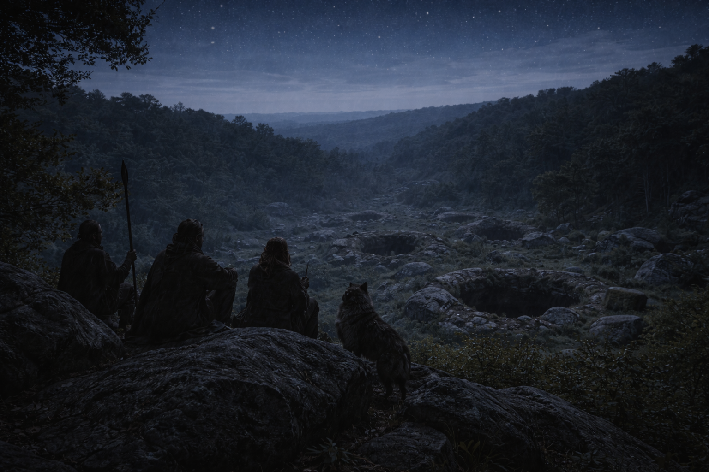
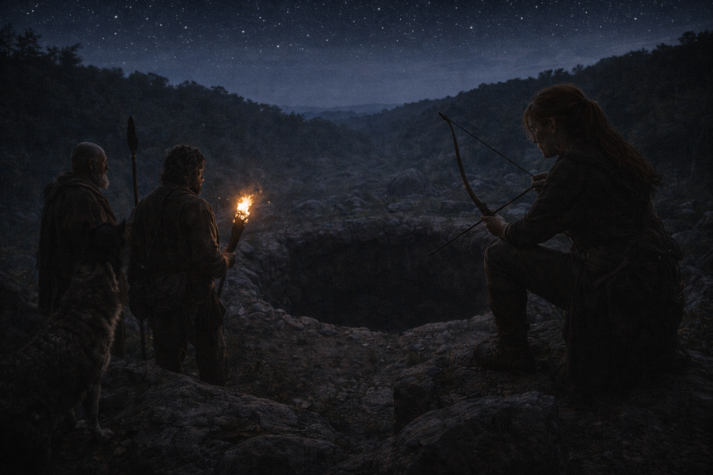
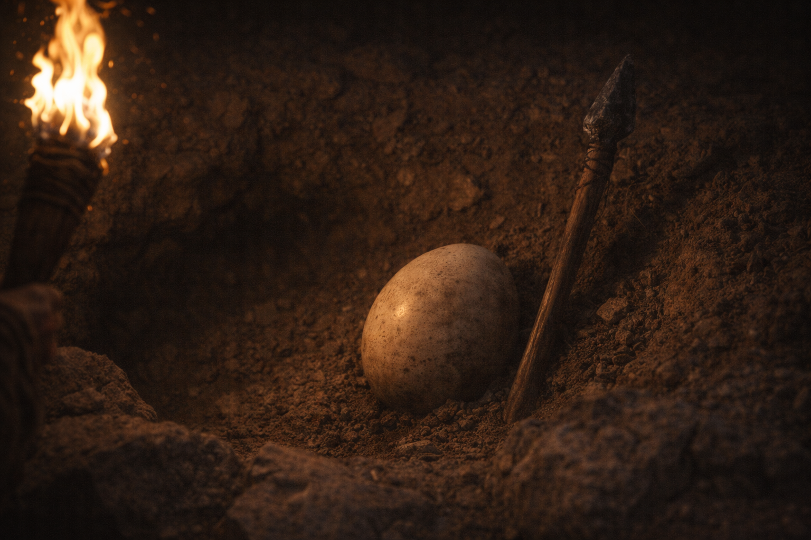
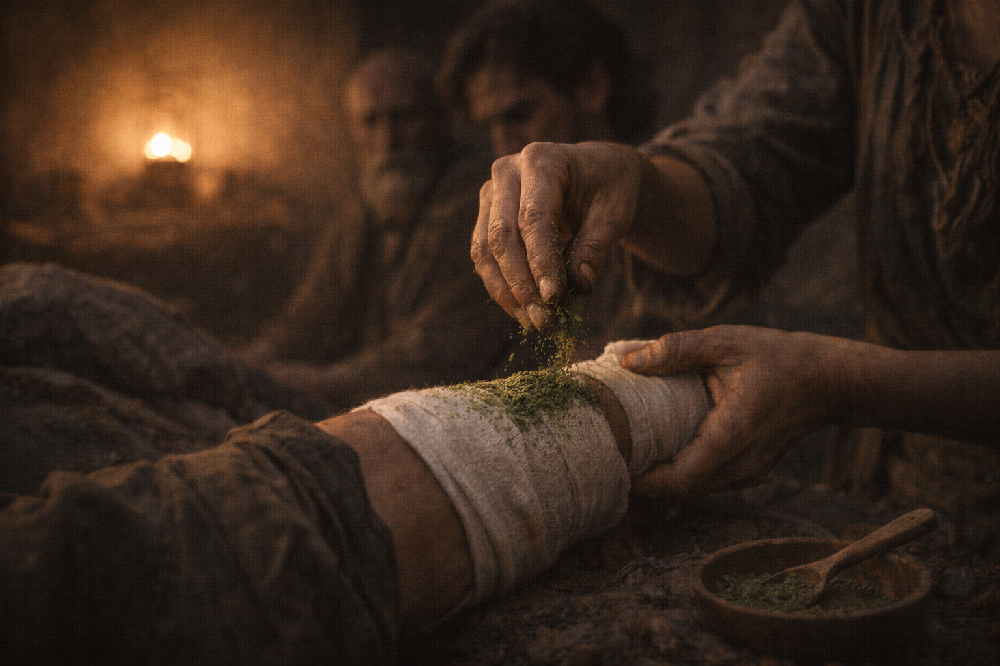
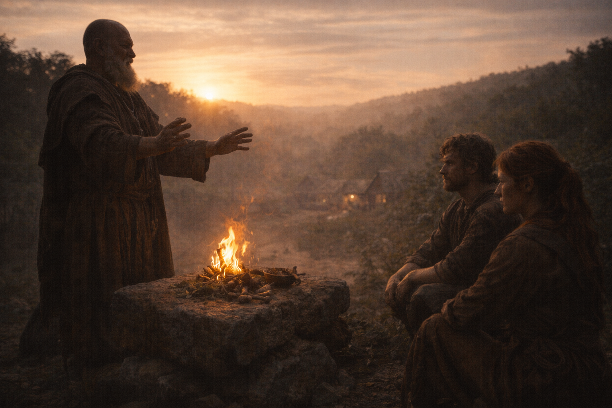

By Shawn Inmon
In previous weeks, we learned about complete sentences (subject + verb). This week, we focus on the VERB and how it changes to show WHEN an action happens!
Last Week: Alex agreed to hunt the dandra-ta in exchange for supplies and safe passage across the lake.
This Week: The hunt begins! Alex and his team face the deadly creatures!
A verb tense tells us WHEN an action happens. The word "tense" comes from a Latin word meaning "time." Today we learn the three main tenses!
Actions that ALREADY HAPPENED
Yesterday, last week, before
Alex jumped into the hole.
Actions happening RIGHT NOW
Today, currently, always
Alex jumps into the hole.
Actions that WILL HAPPEN
Tomorrow, next week, later
Alex will jump into the hole.
Alex jumped into the hole without thinking! His spear bounced off the creature's armored head. Now he was trapped in a deep hole with two awakened monsters!
The author uses past tense to tell us what already happened in the story. All these verbs end in -ed or are irregular past tense forms (fell, held).
Most verbs: just add -ed
Some verbs change completely!
Most verbs follow the -ed rule. The irregular ones are common words that you'll learn to recognize. When in doubt, ask: "Does this SOUND right?" Your ear often knows!
"Alex grabbed the spear and jumped."
This tells us the action already happened.
"Senta-eh fires arrows at the dandra-ta."
This tells us the action is happening right now.
| Tense | When It Happens | How to Form It | Example |
|---|---|---|---|
| Past | Already happened | Add -ed (usually) | Alex jumped |
| Present | Happening now | Base verb (add -s for he/she) | Alex jumps |
| Future | Will happen later | Add "will" | Alex will jump |
MOTLEY
Definition: A mixture of different things that don't match; varied and mismatched.
IMPETUOUS
Definition: Acting quickly without thinking about the consequences; rash and impulsive.
POULTICE
Definition: A soft, moist mixture of healing materials spread on cloth and applied to wounds.
PRIMAL
Definition: Basic, instinctive, and ancient; relating to early human survival instincts.
"The hairs on the back of his neck stood up as a primal early warning system."
DEHYDRATED
Definition: Lacking enough water in the body; dried out from not drinking enough fluids.
"Frina-eh worried about Werda-ak becoming dehydrated during his fever."
INDULGENTLY
Definition: In a way that shows kind tolerance or gentle acceptance; with understanding patience.
"Senta-eh smiled indulgently at the sleeping Alex."
| Present | Past | Example Sentence |
|---|---|---|
| is/are | was/were | Alex was trapped in the hole. |
| go | went | They went to hunt at night. |
| see | saw | Senta-eh saw the creature. |
| take | took | Alex took the spear. |
| come | came | Werda-ak came to help. |
| have | had | They had no real weapons. |
1. Change to PAST tense:
"Alex jumps into the hole."
Answer: "Alex jumped into the hole."
2. Change to FUTURE tense:
"Senta-eh shoots the arrow."
Answer: "Senta-eh will shoot the arrow."
3. Change to PRESENT tense:
"The dandra-ta attacked the village."
Answer: "The dandra-ta attacks the village."
As we read, notice how the author uses different tenses to show what happened (past), what's happening (present in dialogue), and what will happen (future plans).
Frina-eh is just a teenager, but she is the village's only healer. Her grandmother trained her since birth, but died before finishing her training. Now Frina-eh must save Werda-ak's life using skills she's never tested before.
Notice how all these verbs are in past tense because we're describing what Frina-eh already did to help Werda-ak.
After 24 hours of fever and unconsciousness, Werda-ak woke up! The poison was leaving his body. Frina-eh's treatment worked!
The village leader suggests Alex should leave Werda-ak behind to recover. They will care for him like one of their own.
"No. We are a team. We won't leave one of ours behind... We won't leave until he's healthy enough to go with us."
Alex refused to abandon his teammate, even though it means losing time on their mission.
Alex uses future tense to make promises: "We won't leave," "We will wait." Future tense shows determination and commitment!
"Alex looked at Werda-ak, who was still weak. 'You need more rest,' Alex said. 'We will leave when you are ready.'"
Writers often mix tenses when they include dialogue, because characters talk about now and the future!
How did Frina-eh save Werda-ak's life? Use details from Chapter 21 to explain what she did.
"Frina-eh saved Werda-ak's life by using her healing skills and never giving up."
Since you're writing about events that already happened, use past tense throughout your response. Don't switch between tenses!
Frina-eh saved Werda-ak's life by using her healing skills and never giving up. First, Werda-ak was poisoned when a dandra-ta tail spike scratched his leg during the battle. Second, Frina-eh sprinkled green powder into the wound and applied poultices to draw out the poison. Third, she stayed with him all night, changed his bandages every few hours, and dripped water into his mouth to keep him hydrated. Because of Frina-eh's skill and dedication, Werda-ak recovered and was able to continue the journey.
Every verb is in past tense because we're writing about events that already happened. The tenses are consistent throughout!
| Tense | When to Use | How to Form | Signal Words |
|---|---|---|---|
| Past | Already happened | Add -ed or irregular form | yesterday, last week, before |
| Present | Happening now | Base verb (+ -s for he/she/it) | today, now, always |
| Future | Will happen later | will + base verb | tomorrow, next week, later |